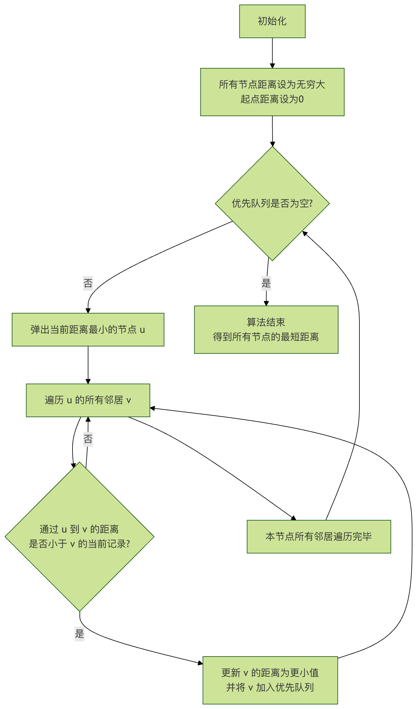

Advanced Graph Algorithms
In the previous basic tutorial, we have already learned the basic concepts of graphs, representation methods, and basic algorithms such as breadth-first search (BFS) and depth-first search (DFS). These algorithms helped us solve problems such as whether two points are connected and graph traversal.
However, many complex problems in the real world, such as friend recommendations in social networks, shortest path planning in map navigation, optimal route arrangement in logistics and distribution, and even the ranking of web pages on the Internet, all require more powerful and efficient algorithms. These areAdvanced Graph AlgorithmsThe challenge to be solved.
Advanced Graph AlgorithmsIt is like a professional tool designed to solve specific complex problems:
- Network Flow: solves flow distribution problems, such as transportation and logistics
- Bipartite Graph Matching: solves matching problems, such as task assignment and marriage matching
- Strongly Connected Components: analyzing the connectivity structure of graphs
- Topological Sorting: solving dependency problems
Real-life case:
- Network Flow: such as traffic flow optimization in urban transportation systems
- Bipartite Graph Matching: such as marriage matching systems
- Strongly Connected Components: such as friend circle analysis in social networks
- Topological Sorting: such as sorting task dependencies
| Problem Types | General Algorithms | Advanced Graph Algorithms |
|---|---|---|
| Flow Optimization | Hard to model and solve | Network flow algorithms specifically solve |
| Matching Problem | Brute-force search is inefficient | Bipartite graph matching efficiently solves |
| Connectivity Analysis | Basic DFS/BFS provides limited information | Strongly connected components provide in-depth analysis |
| Dependency Sorting | Difficult to handle complex dependencies | Topological sorting perfectly solves |
Shortest Path Problem and Dijkstra's Algorithm
Imagine you are using a map app to plan a route from home to the office. There are countless paths on the map, and each path has a different travel time (weight). Your goal is to findShortest total travel timethat path, which is the classicsingle-source shortest path problem。
Core idea of the algorithm
Dijkstra's Algorithmsolvesnon-negative weighted graphsA greedy algorithm for the single-source shortest path problem. Its core idea is like a cautious explorer:
- It maintains a set of nodes with "known shortest distances."
- Each time, pick one from the "unknown region"The node currently closest to the starting pointnode, confirm its shortest distance.
- Then use this newly confirmed node to update the "estimated shortest distance" of all its neighbors.
- Repeat this process until the shortest distances of all nodes are confirmed.
Detailed explanation of algorithm steps
Let's use a flowchart to intuitively understand the execution process of Dijkstra's algorithm:

Flowchart Explanation: The algorithm starts from initialization, continuously takes the unprocessed node closest to the starting point from the priority queue, and uses it to relax (update) the distance estimates of its neighbor nodes, until the queue is empty, at which point all shortest paths are determined.
Code implementation and examples
Next, we use Python to implement Dijkstra's algorithm. We will useheapqthis priority queue (min-heap) module to efficiently obtain the node with the current minimum distance.
Example
def dijkstra(graph, start):
"""
Use Dijkstra's algorithm to compute the shortest distances from the starting point start to all other nodes in the graph.
Parameters:
graph: Adjacency list represented as a dictionary. Format: {node: [(neighbor1, weight1), (neighbor2, weight2), ...]}
start: The starting node.
Returns:
A dictionary containing the shortest distances from all nodes to the starting point.
"""
# Initialization: set the shortest distance of all nodes to infinity
shortest_distances = {node: float('inf') for node in graph}
shortest_distances[start] = 0 # The distance from the start node to itself is 0
# Use a priority queue (min-heap), elements are (current distance, node)
priority_queue = [(0, start)]
while priority_queue:
current_distance, current_node = heapq.heappop(priority_queue)
# If the popped distance is greater than the recorded distance, it is stale data; skip
if current_distance > shortest_distances[current_node]:
continue
# Traverse all neighbors of the current node
for neighbor, weight in graph[current_node]:
distance = current_distance + weight
# If a shorter path is found, update
if distance < shortest_distances[neighbor]:
shortest_distances[neighbor] = distance
heapq.heappush(priority_queue, (distance, neighbor))
return shortest_distances
# --- Test example ---
# Define a weighted directed graph (node: [(neighbor, weight), ...])
test_graph = {
'A': [('B', 4), ('C', 2)],
'B': [('C', 1), ('D', 5)],
'C': [('B', 1), ('D', 8), ('E', 10)],
'D': [('E', 2)],
'E': []
}
start_node = 'A'
distances = dijkstra(test_graph, start_node)
print(f"Shortest distances from node {start_node} to each node:")
for node, dist in distances.items():
print(f" to node {node}: {dist}")
Code explanation：
shortest_distancesA dictionary is used to record, from the start node to each node,Final confirmationThe shortest distance, with an initial value of infinity.priority_queueIt is a min-heap, always allowing us to quickly take out the node currently estimated to be closest to the start node.- In the main loop,
heapq.heappopTake out the top node of the heap (the current closest node). if current_distance > ... : continueIt is a key optimization to handle the possible existence of multiple stale versions (distance values) of the same node in the heap.- When traversing neighbors, calculate
distance = current_distance + weight, this is the "new distance to the neighbor via the current node." - If the new distance is shorter, update it
shortest_distancesandPush the neighbor and its new distance into the heapfor subsequent processing.
Running the above code, you will get the following output：
从节点 A 出发到各节点的最短距离： 到节点 A: 0 到节点 B: 3 # 路径: A -> C -> B 到节点 C: 2 # 路径: A -> C 到节点 D: 8 # 路径: A -> C -> B -> D 到节点 E: 10 # 路径: A -> C -> B -> D -> E
Minimum Spanning Tree and Prim's Algorithm
Now consider another problem: you need to lay a fiber-optic network for a newly built residential area, connecting all houses, but to save costs, you want the total length of fiber used to be the shortest. Given the cost (weight) of laying fiber between every two houses, how do you choose which lines to lay?
This problem requires us to find asubgraph connecting all nodes, and this subgraph is a tree (acyclic), and the total weight of all its edgesThe sum of weights is minimized. This tree is calledMinimum Spanning Tree (MST)。
Prim's algorithm idea
Prim's algorithmIt is a greedy algorithm for finding an MST. Its process is very much like "growing a tree":
- Start from any node and initialize the tree to contain only that node.
- among allconnecting internal nodes and external nodes of the treeAmong the edges, choose oneminimum weightthe edge.
- Add this edge and the node it connectsexternal nodeAdd it to the tree.
- Repeat steps 2 and 3 until all nodes are included in the tree.
Code implementation and examples
The implementation of Prim's algorithm is very similar to Dijkstra's; the difference lies in the definition of distance.
In Prim's algorithm, what we maintain is the distance from each node tocurrent spanning treeminimum connection cost.
Example
def prim_mst(graph):
"""
Use Prim's algorithm to calculate the total weight of the graph's minimum spanning tree (MST).
Parameters:
graph: Adjacency list represented as a dictionary. Format: {node: [(neighbor1, weight1), (neighbor2, weight2), ...]}
Assume the graph is connected.
Returns:
The total weight of the minimum spanning tree.
"""
start_node = list(graph.keys())[0] # Start from any node; here take the first one
visited = set([start_node]) # Set of nodes already added to MST
# Priority queue, storing (edge weight, neighbor node)
# Initialization: add all edges of the starting node to the queue
edges = [(weight, start_node, neighbor) for neighbor, weight in graph[start_node]]
heapq.heapify(edges)
total_weight = 0
while edges:
weight, from_node, to_node = heapq.heappop(edges)
if to_node not in visited:
visited.add(to_node) # Add the new node to MST
total_weight += weight # Accumulate MST total weight
print(f"Add edge: {from_node} - {to_node}, weight: {weight}") # Output selected edges
# Add all edges connecting the new node to external nodes to the queue
for neighbor, w in graph[to_node]:
if neighbor not in visited:
heapq.heappush(edges, (w, to_node, neighbor))
return total_weight
# --- Test example ---
# Define an undirected weighted graph (each edge appears twice in the adjacency list)
test_graph_undirected = {
'A': [('B', 4), ('C', 2)],
'B': [('A', 4), ('C', 1), ('D', 5)],
'C': [('A', 2), ('B', 1), ('D', 8), ('E', 10)],
'D': [('B', 5), ('C', 8), ('E', 2)],
'E': [('C', 10), ('D', 2)]
}
print("The process of building the minimum spanning tree:")
mst_weight = prim_mst(test_graph_undirected)
print(f"\nTotal weight of the minimum spanning tree is: {mst_weight}")
Code explanation：
visitedThe set records the nodes that already belong to the MST.edgesis a min-heap, storing allEdges spanning the inside and outside of the MSTedge (i.e., one endpoint is invisited, the other end is not in it).- In the main loop, always take the edge with the smallest weight from the heap
(weight, from_node, to_node)。 - If the node connected by this edge
to_nodehas not been visited, then it is a valid MST edge. Add it to the result, and updatevisitedandtotal_weight。 - Add the new node
to_nodeall its edges leading to external nodes are added to the heap for the next round of selection.
Run the above code and you will see the construction process of the MST：
构建最小生成树的过程： 添加边: A - C, 权重: 2 添加边: C - B, 权重: 1 添加边: A - B, 权重: 4 # 注意：这条边连接B和A，但B已在树中，所以会被下一行的if语句跳过，不会添加。 添加边: B - D, 权重: 5 添加边: D - E, 权重: 2 最小生成树的总权重为: 10
(Note: in the actual output, the edge A - B, becauseto_nodeB is already presentvisited, so it will not be executedprintstatement. The above comment is for explanation.)The final MST edges are A-C, C-B, B-D, D-E, and the total weight is 2+1+5+2=10.
Topological Sorting: Handling Tasks with Dependencies
When you need to schedule a series of tasks, and some tasks must start after other tasks are completed (for example, putting on socks must come before putting on shoes), how would you determine a reasonable execution order? The dependencies between tasks can be represented byDirected Acyclic Graph (DAG)to represent, and the process of finding a feasible linear execution order isTopological Sorting。
Kahn's algorithm (based on in-degree)
Kahn's algorithmIt is one of the most intuitive algorithms for topological sorting, based on in-degree (the number of edges pointing to the node).
- Find all nodes with in-degree 0; they are tasks that can be executed immediately (no prerequisite dependencies).
- Put these nodes into a queue and "remove" them from the graph (output them to the sorting result).
- After "removing" a node, update the in-degree of all its neighbors (decrease by 1). If a neighbor's in-degree becomes 0 as a result, add it to the queue.
- Repeat steps 2 and 3 until the queue is empty.
- If the number of output nodes equals the total number of nodes in the graph, the sort succeeds; otherwise, it means the graph contains a cycle and cannot be topologically sorted.
Code implementation and examples
Example
def topological_sort_kahn(graph):
"""
Use Kahn's algorithm for topological sorting.
Parameters:
graph: adjacency list represented as a dictionary. Format: {node: [neighbor1, neighbor2, ...]}
Returns:
If a topological sort exists, return a list (the sorted order); otherwise return None (a cycle exists).
"""
# 1. Calculate the in-degree of all nodes
in_degree = {node: 0 for node in graph}
for node in graph:
for neighbor in graph[node]:
in_degree[neighbor] = in_degree.get(neighbor, 0) + 1
# 2. Initialize the queue and enqueue all nodes with in-degree 0
queue = deque([node for node in in_degree if in_degree[node] == 0])
topo_order = []
# 3. Process the queue
while queue:
current_node = queue.popleft()
topo_order.append(current_node)
# "Remove" the current node and update the in-degrees of its neighbors
for neighbor in graph.get(current_node, []):
in_degree[neighbor] -= 1
if in_degree[neighbor] == 0:
queue.append(neighbor)
# 4. Check whether all nodes have been sorted
if len(topo_order) == len(graph):
return topo_order
else:
return None # A cycle exists in the graph
# --- Test example ---
# Define a directed graph of course dependencies
# For example: before taking the algorithm course (Algo), you need to take the data structures course (DS)
course_graph = {
Programming: [Data Structures, Algorithms],
Data Structures: [Algorithms, Databases],
Algorithms: [Machine Learning],
Databases: [System Design],
Mathematics: [Machine Learning],
Machine Learning: [],
System Design: []
}
print("Course dependency graph:")
for course, deps in course_graph.items():
print(f" {course} -> {deps}")
result = topological_sort_kahn(course_graph)
if result:
print(f"\nA feasible course learning order (topological sort) is:")
print(" -> ".join(result))
else:
print("\nCourse schedule has circular dependencies and cannot be sorted!")
Line-by-line code analysis：
in_degreeA dictionary records the in-degree of each node. Traversing the adjacency list lets you calculate how many edges point to each node.- Initialize queue
queue, add all nodes with "no prerequisite tasks" (in-degree 0) to the queue. - In the main loop, take nodes from the queue and add them to the result list
topo_order, which is equivalent to completing that task. - Traverse all successor tasks (neighbors) of this task, decrementing their in-degree by 1. If it decreases to 0, it means all prerequisite tasks of that task have been completed, and it can be added to the queue for execution.
- Finally, check the length of the sorting result. If it is the same as the number of graph nodes, it succeeds; otherwise, it means that some nodes always have prerequisite dependencies (in-degree not 0), meaning there is a cycle in the graph.
Run the above code and you will get a feasible learning order：
Course dependency graph: 程序设计 -> ['数据结构', '算法'] 数据结构 -> ['算法', '数据库'] 算法 -> ['机器学习'] 数据库 -> ['系统设计'] 数学 -> ['机器学习'] 机器学习 -> [] 系统设计 -> [] A feasible course learning order (topological sort) is: 程序设计 -> 数学 -> 数据结构 -> 算法 -> 数据库 -> 机器学习 -> 系统设计
Note: The result of topological sorting may not be unique. For example, both mathematics and programming are starting nodes with in-degree 0, and either one can come first.
Algorithm comparison and application scenarios
To help you better understand and choose these algorithms, the following table summarizes their key characteristics:
| Algorithms | Main purpose | Applicable graph types | Core idea | Time complexity (using priority queue) | Typical application scenarios |
|---|---|---|---|---|---|
| Dijkstra | Single-source shortest path | with non-negative weightsdirected/undirected graph | Greedy, each time expanding the node currently closest to the start node | O((V+E) log V) | Map navigation, network routing |
| Prim | Minimum Spanning Tree (MST) | Weighted connected undirected graph | Greedy, each time incorporating the node closest to the current spanning tree into the tree | O((V+E) log V) | Network cabling, circuit board design, cluster analysis |
| Kahn (topological sorting) | Task scheduling and ordering | Directed Acyclic Graph (DAG) | Based on in-degree, repeatedly remove nodes without prerequisite dependencies | O(V+E) | Course scheduling, build system dependencies, compilation order |
Practice exercises
Just looking is not enough; you need hands-on practice to truly master it! Please try to complete the following exercises:
Exercise 1: Fix Dijkstra's algorithm
The following code intends to implement Dijkstra's algorithm, but it has several bugs. Please find and fix them.
Example
def wrong_dijkstra(graph, start):
dist = {node: float('inf') for node in graph}
dist[start] = 0
pq = [(0, start)]
while pq:
cur_dist, cur_node = pq.pop(0) # There may be a problem here
for neighbor, weight in graph[cur_node]:
if cur_dist + weight < dist[neighbor]:
dist[neighbor] = cur_dist + weight
# Something may be missing here
return dist
Exercise 2: Implement Kruskal's algorithm
Prim's algorithm is one method for finding an MST; another classic method isKruskal's algorithm. The idea is:
- Sort all edges in the graph by weight from smallest to largest.
- Consider each edge in order; if the two nodes connected by this edgeNot in the same connected component(i.e., adding it will not form a cycle), then add it to the MST.
- Repeat step 2 until the MST has V-1 edges (V is the number of nodes).
Your task: Try using the "Disjoint Set Union (DSU)" data structure to implement Kruskal's algorithm, to efficiently determine whether two nodes are connected.
Exercise 3: Real data challenge
Suppose you have afriendships.jsonThe file records users (represented by IDs) and their friend relationships in a social network. Each relationship has an "intimacy" weight.
[
{"user_id": 1, "friend_id": 2, "closeness": 5},
{"user_id": 1, "friend_id": 3, "closeness": 2},
{"user_id": 2, "friend_id": 3, "closeness": 1},
{"user_id": 2, "friend_id": 4, "closeness": 6},
{"user_id": 3, "friend_id": 4, "closeness": 3},
{"user_id": 4, "friend_id": 5, "closeness": 4}
]
Problem: if the "intimacy" weight can be regarded as distance (the smaller the value, the closer the relationship), please calculate from user1start, to all other users, the "most intimate path" (i.e., the path with the smallest weight sum). Which algorithm should you use? Please write code to solve it.
Click me to share notes
The note must be an extension of this article's content!
For article submission, click here
How to obtain the registration invitation code
Before sharing notes, you mustLog in！
How to obtain the registration invitation code